UX audit: Today (workspace landing dashboard)
Disclosure about audit mode. Early on I pressed the
Check in button on the arrival row of Today as Manager,
expecting it to open a dialog. In the product it is a direct form submit
(
CheckInAction, one press). The server refused it ("That
Reservation cannot be checked in."). Nothing persisted that I can see:
Arrivals still read 0 / 1 checked in on every later load, as Manager,
Front Desk, Housekeeping and Owner. I cannot see the audit log's view of
a refused attempt, so if one was recorded it is mine. I did not press it
again, and I pressed no other command button (Check out, Mark inspected,
New booking submit). I also ran the browser offline for about 2.5
minutes on my own page (read-only, restored afterwards).
1. Verdict
- Could the duty manager use it unaided? Mostly yes. The first screen answers "what needs me" in about two cards, every number is a link, the clock and freshness line are honest, and nothing needed training. I did not hit a dead end or a raw error code.
- Biggest risk: the numbers disagree with each other or mislead. "Expected tonight 33%" and "Booked ahead, Oct 11: 67%" sit on the same screen for the same night. "Ready rooms 1 / 3" counts a room with a Guest still in it, so the manager is told a room is ready when no vacant ready room exists for the waiting arrival.
- "What happened overnight" is not answerable. Recent activity is the five newest records of any age (the visible ones go back to Sep 29), with no booking or Guest named, so it never reads as "since I was last here".
- Quick actions are a mixed bag. The one I tried from the arrival row was refused with a reason-free sentence, while the row itself labelled the room "Not ready".
- The page left open all shift does not warn when the browser is offline (it only warns when a request fails), so a stale 15:12 reading can sit under a 15:40 clock with no warning.
2. Findings
| ID | Severity | Where | What happened | What I expected | Suggested fix | Effort | Evidence | Basis |
|---|---|---|---|---|---|---|---|---|
| TODAY-01 | causes errors | /en/today · Manager · 1 in house, 1 arrival to come, 1 overdue | Occupancy tile says "Expected tonight 33%". The Booked ahead card, same page, says Oct 11 = 67% (2 of 3 units held). Arithmetic: expected tonight = in house 1 + to arrive 1 − due out 1 (the overdue Guest counted as leaving) = 1 of 3. Booked ahead counts the overdue Guest's Stay as still holding the night. | One number for tonight, or a visible reason why they differ. | Use one definition for both; if "overdue leaves tonight" is an assumption, say so in the tile ("assumes the overdue Guest leaves"). | M | 01; reproduced Y (three loads) |
verified numbers; cause inferred from
today-derive.ts and TD-S1-20
|
| TODAY-02 | causes errors | /en/today · Manager, Owner, Housekeeping · Rooms tile and card |
"Rooms 1 / 3 READY ROOMS" and "Ready 1". The only room counted
ready is 102, which has a Guest in house (the overdue one).
Following the figure (housekeeping?show=ready)
lists exactly 102, "Inspected", "Guest in house". There is no
vacant ready room for the arrival waiting for 201.
|
"Ready" on a landing page means I can put a Guest in it. Ready and vacant. | Count ready and unoccupied, or label it "Inspected" and add a "free and ready" figure. Front Desk's tile ("Rooms ready for waiting arrivals 0 / 1") already gets this right. | S |
02 (landing list, filter
says "1 ready"); the single-row show=ready list was
read as text, not screenshotted
|
verified |
| TODAY-03 | causes errors | /en/today · Manager · Today's movements, arrival row (room 201 "Not ready") |
One press of Check in returned the red sentence
"That Reservation cannot be checked in." with no reason. The row
had offered the action and carried a "Not ready" badge. By
design a not-ready room should answer with a warning and a
"Check in anyway" choice (notReady outcome), so
this was the generic refused outcome, which the
code says covers cancelled, out of reach, already arrived and
gone. The Arrivals page also offers Check in for the same row.
|
Either the "room not ready, check in anyway?" step, or a plain reason (permission, state, blocker). A button that is offered should not end in a reason-free refusal. | Find out why the offered action was refused for this role/booking; map that cause to a specific message (the server deliberately merges reasons to avoid leaking existence, but a viewer who can see the row can be told). Docs TD-S2-01 describe a dialog; the product is a one-press button, so align one of them. | M | 03; reproduced N (pressed once, not repeated because pressing it again is an action) | verified outcome; unknown why it was refused |
| TODAY-04 | causes errors | /en/finance · Housekeeping · reached from the rail | Today deliberately sends no money to Housekeeping (TD-S1-03), but the same account opens Finance and sees a Folio list with the Guest name (102, ahmed) and a balance column (TRY 0.00). The rail also offers Finance, People, HR, Analytics to this role. | Either the role may read Folios (then Today is the odd one) or the Finance route refuses it. | Owner decision on whether Housekeeping may read Folios; make Today and Finance agree. This is another page's behaviour, noted because it undermines the "hidden on Today" promise. | unknown | read as text only, no screenshot; reproduced Y (once, via navigation) | verified page renders; unknown whether intended |
| TODAY-05 | slows me down | /en/today · Manager · Recent activity | Five newest records of any age. Right now: one reservation taken today, then three "Role changed" from Sep 29/30 and one "Departure changed" from Sep 29. Entries do not say which booking, Guest or person ("Reservation taken" by "You" tells me nothing new; "Role changed" does not say whose). There is no "since yesterday" or "since I last looked". Actors read "You" (own) but the Owner sees the same entries as "albaraa@prizic.com", and Front Desk shows as an email while the greeting uses a display name. | The 07:30 question is "what happened overnight". I expect only the last 12–24 h, grouped, with the booking reference or Guest and the staff display name. | Window the card to the last day (or since the previous visit); show the subject (reservation code, room) and display name; empty state "Nothing since yesterday evening". | M | 01; reproduced Y; Owner view read as text | verified |
| TODAY-06 | slows me down | /en/today · Manager, Front Desk · "Needs attention", room 201 | "Room not ready. Arriving today; the room is not ready yet." The Housekeeping board shows 201 is Clean and merely waiting for inspection: one tap for someone, not a cleaning job. The card does not say which, and links to Arrivals, not the board, for Manager/Front Desk. For Housekeeping the same fact appears twice (attention card and "Clean these first"). | "201 clean, waiting for inspection" and the action that fixes it. | Put the reason in the sentence (dirty / awaiting inspection / being cleaned). For housekeeping, drop the duplicate or fold it into the clean-first row. | S | 01, 11; reproduced Y | verified |
| TODAY-07 | slows me down | /en/today · Manager · page left open, browser offline | I took my tab offline for about 2.5 minutes. The freshness line stayed "Updated 15:12" in the normal muted style while the clock reached 15:14. The warning pill from TD-S1-25 never appeared. On reconnect it refreshed on its own (to 15:14). The pill appears only after a request fails; while the browser is offline the refresh is paused rather than failing. | A screen left open all shift must say it is not live as soon as it stops being live. | Treat a paused or offline refresh as stale (use the query's fetch status / online state), and use the same pill. | S | 12 (taken at the 375-wide layout, shows "Updated 15:12" under a 15:13 clock, no warning); reproduced Y (one run) | verified |
| TODAY-08 | slows me down | /en/today · Manager · Departures tile and tab | Tile reads "0 / 0 CHECKED OUT" with a small "1 overdue" under it; the movements tab says "Departures · 1". The guest has been overdue since Oct 1 (ten days) but the red badge only says "Oct 1", and the attention card only "Was due to leave on Oct 1". A first glance reads "no departures". | "1 to leave, overdue 10 days". | Include overdue in the headline number or colour the tile; say "10 days overdue". | S | 01, 04; reproduced Y | verified |
| TODAY-09 | slows me down | /en/today · Manager · Maintenance card |
Open requests, New, In progress, Waiting for parts and Out of
order all link to the same unfiltered
/maintenance?property=.... Rooms card figures do
narrow (?show=ready,
awaiting_inspection, ...), so the page has two
behaviours. (All figures are 0 on staging, so the effect on a
busy day is inferred.)
|
A figure opens exactly the rows it counted (TD-S5-01 intent). | Add a status filter to the maintenance board and link each figure to it. | M | link targets in snapshot; reproduced Y | hrefs verified; busy-day effect inferred |
| TODAY-10 | slows me down | /en/today · Manager at 375 px and 768 px | At 375 the page title disappears, attention cards fill the first screen, and the four headline figures (occupancy, arrivals, departures, rooms) are at the very bottom, after Charges today, about 2,900 px down. The bottom bar shows 5 of 14 destinations with clipped labels ("Front Offi...", "Guest Exp...", "Maintena..."). At 768 the breadcrumb truncates to "WORKSPACE > T...". No horizontal scroll at either width (measured: scrollWidth = clientWidth). | On a phone the shift's headline numbers near the top. | Reorder on small screens (figures two across directly under attention), shorten bottom-bar labels, let the breadcrumb keep the page name. | M | 05 (full-page capture, the fixed bar overlaps content; that overlap is a capture artefact), 06, 07; reproduced Y | verified; order matches TD-S1-28 as written, so this is a design call |
| TODAY-11 | slows me down | /en/today · Front Desk and Housekeeping tiles | Front Desk: two tiles both titled "Arrivals" and both "0 / 1": one "checked in", one "rooms ready for waiting arrivals". Housekeeping: two tiles titled "Rooms" ("1 / 3 ready rooms" and "1 arrivals waiting on a room"). The title is the link target, not the meaning, so identical titles with identical numbers read as a duplicate. | Each tile titled by what it counts. | Title by the metric ("Rooms ready", "Arrival rooms"), not the destination. | S | 10, 11 | verified |
| TODAY-12 | polish | /en, /tr, /ar · header | The time zone shows as raw "EUROPE/ISTANBUL" in capitals in all three languages. | "Istanbul time" / "Istanbul saati" / localized name. |
Format with Intl.DisplayNames or drop it when it
equals the viewer's own zone.
|
S | 01, 09, 08 | verified |
| TODAY-13 | polish | /ar/today · Manager | The Housekeeping rail item reads "خدمة الغرف", which literally means room service. The rail label for HR is cut off ("...الموارد البشرية والر"). The two-part figures (for example 1 / 3) render in bidirectional order, so they read "3 / 1" left to right; I could not tell whether that is the intended Arabic reading. Layout otherwise mirrors correctly and nothing scrolls sideways. | "التدبير المنزلي" or "الإشراف الداخلي"; labels that fit. | Have a native reviewer check the rail and fraction order. | S | 08 | verified text; translation judgement is mine (inferred); fraction order unknown |
| TODAY-14 | polish | /en/today · Manager · Booked ahead | A bare line with only the first and last nights labelled (67% ... 0%); the other 12 nights are in a visually hidden table. On this data it is a cliff from tonight to nothing. Whether it stays readable with real bookings is inferred. | Hover/tap values, or a few ticks. | Add day ticks and a value on hover/focus. | S | 01 | verified (this data); busy-day inferred |
| TODAY-15 | polish | / (root URL) |
Signed out, the root goes to /tr/sign-in; signed in
it goes to /tr/today (Turkish default). A manager
who works in English lands in Turkish at the bare address and
has to switch. I did not test whether a switched language is
remembered.
|
Last-used language. | Remember the chosen locale on the device. | S | URL observed after navigation (no screenshot of the redirect itself) | verified redirect; remembering unknown |
| TODAY-16 | polish | /en/today · Today's movements | The Arrivals / Departures switch is exposed as two buttons with a pressed state (accessibility tree), not as tabs. The Property name in the header is plain text with no switcher affordance when there is only one Property. | Tabs semantics for keyboard/screen reader; a visible hint when more Properties exist. | Use tablist roles; keep the switcher visible only when it can switch. | S | accessibility snapshot | verified structure; the multi-Property case unknown |


3. Jobs
| # | Job (persona: 07:30 duty manager) | Pass test (written first) | Result | Seconds | Clicks |
|---|---|---|---|---|---|
| 1 | Open the app and know what needs me | From sign-in I reach Today and can name the open problems without scrolling at 1280 px. | Pass: two cards, "Room not ready 201" and "Overdue departure 102", above the fold. | not timed | 0 after sign-in (root URL lands on Today) |
| 2 | Is anything on fire? (numbers consistent with the lists) | Each headline figure equals the length of the list it opens. | Partial. Arrivals 0 / 1, Departures (1 overdue), Rooms all match Arrivals, Departures and Housekeeping. Fails on tonight's occupancy (TODAY-01) and on "ready" (TODAY-02). | not timed | 5 (one per list) |
| 3 | What happened overnight | I can see only what changed since yesterday evening, with who and which booking. | Fail (TODAY-05). | not timed | 1 (open the audit log link) |
| 4 | Deal with the arrival whose room is not ready | From Today I learn why it is not ready and can move it forward (check in anyway, or send housekeeping). | Fail. The card gives no reason (TODAY-06); the row's Check in was refused with a reason-free sentence (TODAY-03). | not timed | 1 (the press I should not have made) |
| 5 | Clear the overdue departure | Reach the check-out for 102 in two clicks and see the bill review first. |
Reached the Departures tab and the Check out button in 1 click;
stopped before submit: not persisted. The bill
review is inferred from CheckOutDialog in
code.
|
not timed | 1 |
| 6 | Empty versus busy day, and large volume | An empty day reads zero and offers a next step; a busy day does not break layout. | Cannot create data. Empty/quiet-day behaviour and caps are inferred from code (attention shows 4 then "N more", lists capped at 6, activity at 5, the quiet-day lines in TD-S1-19/23). Seen on this data: zero maintenance, zero charges render as zeros, not hidden. | n/a | n/a |
| 7 | "It is broken and I am under pressure": the page goes stale or the network drops | The page tells me when it is not live and recovers by itself. | Partial. Recovers by itself on reconnect (verified). Does not warn while offline (TODAY-07). Online refresh runs every 60 s (verified: 15:07 to 15:08). | about 60 s refresh, 150 s offline test | 0 |
| 8 | Another role: what do Front Desk, Housekeeping and Owner see, and what is hidden without explanation? | Each role sees a sensible page, and withheld cards do not leave holes. | Mostly pass. Front Desk: movements, rooms, no maintenance/activity/charges. Housekeeping: attention without the Guest name, clean-first, no money. Owner: same as Manager. The absence is silent: no card says "not shown for your role". By design (TD-S1-03/04), but the viewer cannot tell hidden from zero. Finance exposure from Housekeeping: TODAY-04. | not timed | 3 sign-ins |
| 9 | First-time setup / Property switcher | With several Properties, switch and keep the Property in every link. |
Not testable: every test account reaches one Property. Property
is carried in every link I read (?property=) and an
unknown ?property= goes back to Today (verified).
The strip and switcher are unknown.
|
n/a | n/a |
4. Top changes
- I see one number for tonight. Resolve Expected tonight versus Booked ahead (TODAY-01).
- "Ready" means I can put a Guest in it. Count ready and vacant rooms only (TODAY-02).
- A button on Today never ends in a reason-free refusal. Offer the not-ready path or say why (TODAY-03).
- I see overnight changes in the first screen. Window activity to the last day, name the booking and the person (TODAY-05).
- The attention card tells me what to do about the room. Name the reason (awaiting inspection vs dirty) (TODAY-06).
- I know when the screen has stopped being live. Show the stale pill when the refresh is paused offline (TODAY-07).
- An overdue guest cannot hide in "0 / 0". Overdue in the headline, with days overdue (TODAY-08).
- On a phone the shift's numbers are at the top (TODAY-10).
- Each tile says what it counts (TODAY-11).
- Maintenance figures open the rows they count (TODAY-09).
5. Inconsistencies with sibling screens and features
- Housekeeping page says "Ready to let" / "Clean + Waiting for inspection"; Today says "Ready" / "Clean, awaiting inspection" and "Ready rooms". Same facts, three phrasings (verified).
- Housekeeping's own "Ready to let 1" also counts occupied 102, so TODAY-02 is inherited from that screen's definition, not new on Today.
- Departures page has "Due and overdue / Everybody in house" and a "Left today" section (0, "Nobody has left yet today"). Today's tile denominator excludes the overdue Guest that the list includes.
- Arrivals shows balance "No Folio" for 201; Today's arrival row shows no balance. Not a defect, but Today never says a Folio is missing.
- The Housekeeping page has the back button (seen in screenshot 02); Today (the root) correctly has none (ADR 0035). The Today header actor labels differ from other lists: raw emails here, display names in the greeting.
- Rail shows 14 destinations to Manager but the movements, rooms, maintenance cards cover only 5; Housekeeping sees Finance/People/HR/Analytics in the rail (see TODAY-04).
- Check in from Today is a one-press button; the feature doc (TD-S2-01) calls it "the Arrivals dialog". Check out does open a dialog, so the two commands behave differently under the same pattern.
6. Not built / needs backend work
-
Open at the booking or Stay (attention items and rows open the list,
not the record): deferred,
TD-S2-05,TD-DEF-09. -
Guest and Resident requests, shift handover notes, inventory,
approvals, integrations, revenue tile, customisable layout, same-day
late check-out: deferred rows
TD-DEF-01toTD-DEF-07; Guest requests on Today: proposedTD-S6-01. -
Days waiting to be closed (Close the day backlog) are not an attention
item on Today. I found no row for it in
today-dashboard/edge-cases.csvand no reference intoday-derive.ts. Inferred; I did not check the Close the day screen's own state. -
"Since last visit" / overnight window for activity: no row in the edge
cases (the closest,
TD-S3-01, says "five newest"). -
Multi-Property behaviour (switcher, Organization strip
TD-S3-03): documented as built, not exercised here because the test accounts reach one Property.
7. What already works well and must not regress
-
Every figure is a link and carries
?property=; narrowed lists (?show=readyetc.) land with a notice naming the filter and "Show all" (verified, 02). - Arrivals, Departures and Rooms figures match their lists to the row (verified).
- Role shaping works as documented: Front Desk and Housekeeping get different leads; Housekeeping's attention card omits the Guest; no money shown without the finance permission (verified on Today).
- Auto-refresh every 60 s, and the page recovers on its own after the network returns (verified).
-
Unknown
?property=redirects back to Today on a real Property instead of showing another Property's day (verified). - All three languages render fully; Arabic mirrors by layout alone with no sideways scroll; Turkish and English copy is plain (verified, 08, 09).
- No horizontal scroll at 375 or 768 px (measured).
- Quiet and zero states show as zeros and calm lines instead of vanishing cards (zero maintenance and zero charges visible on this data).
Screenshots
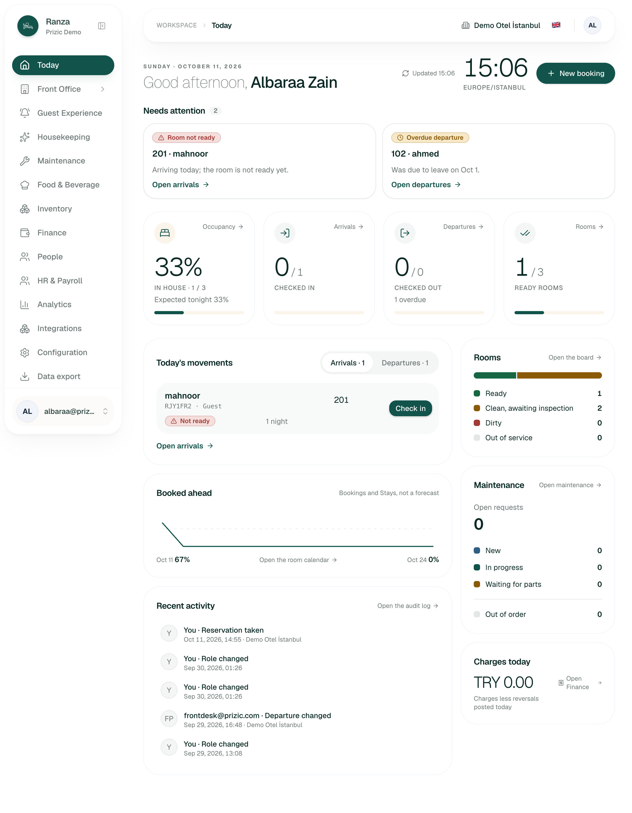
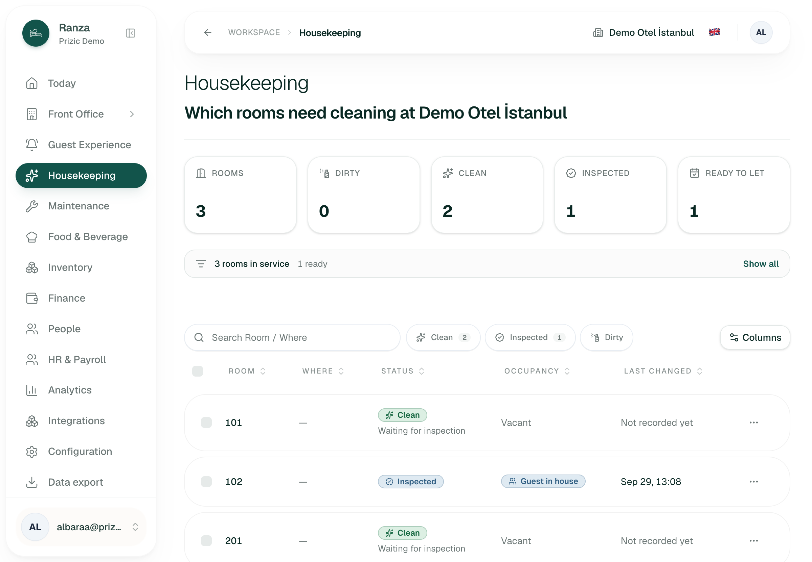
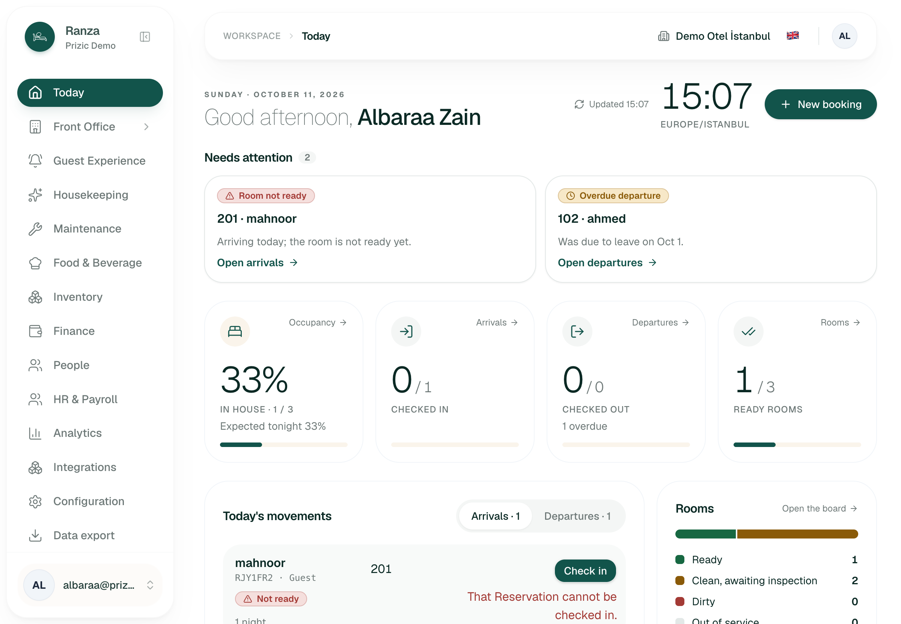
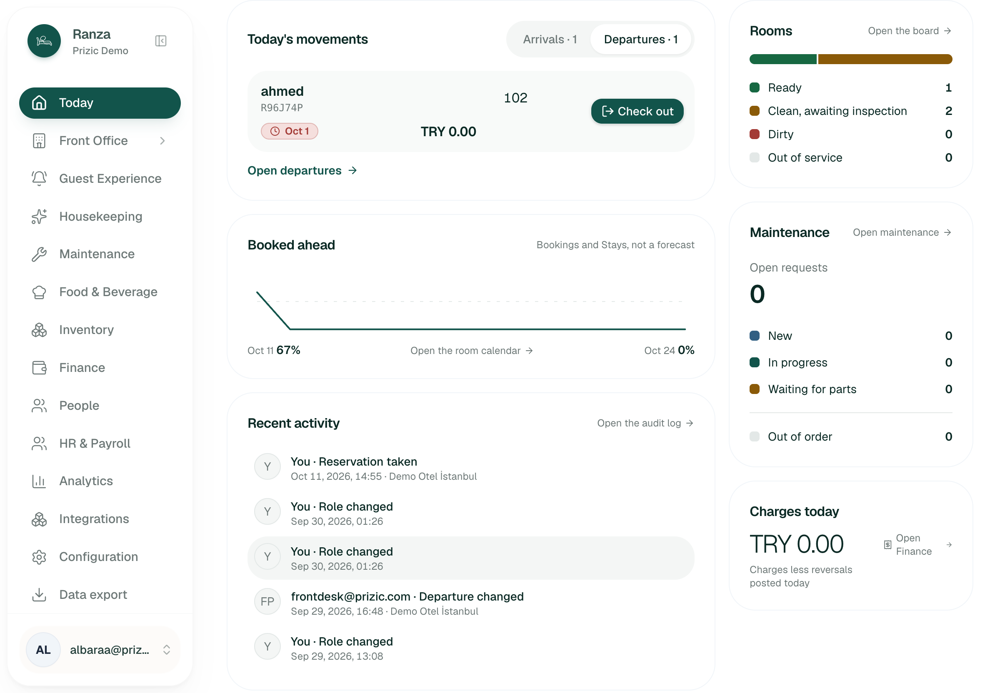
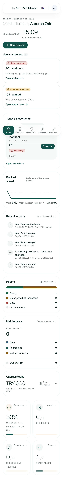
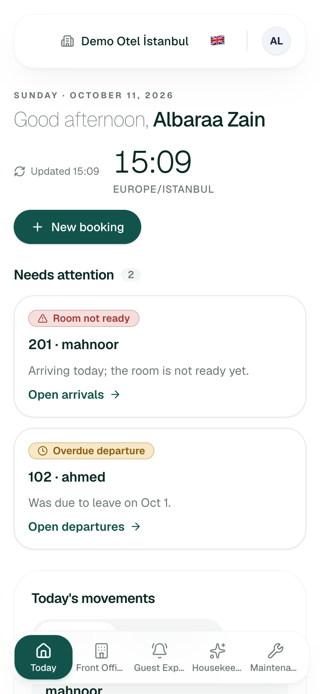
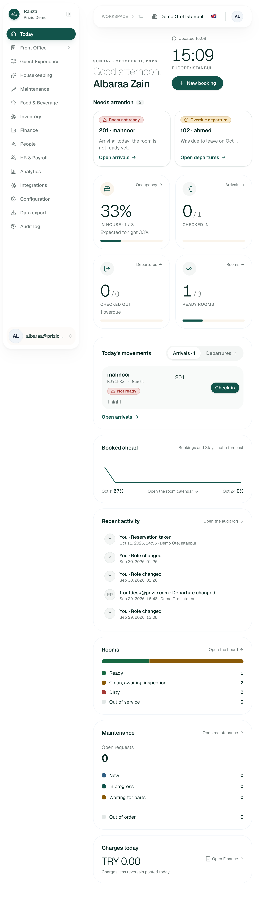
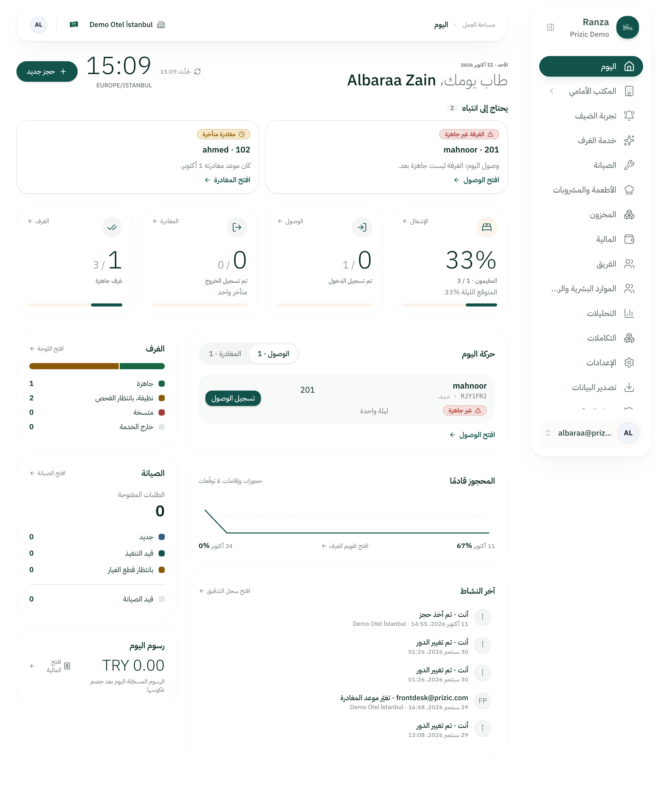
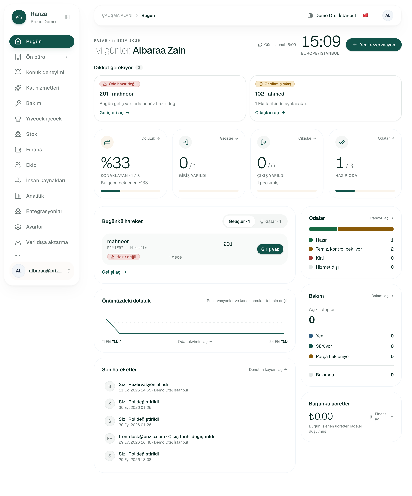
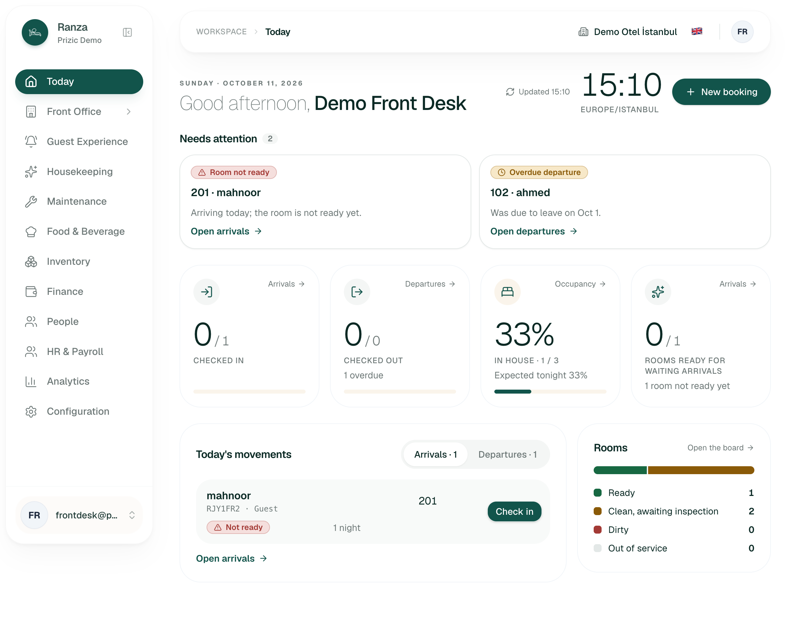
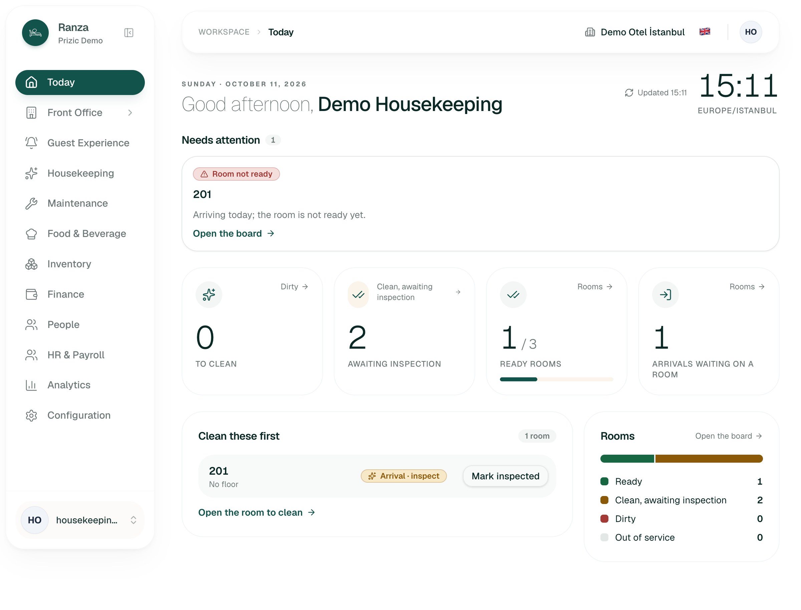
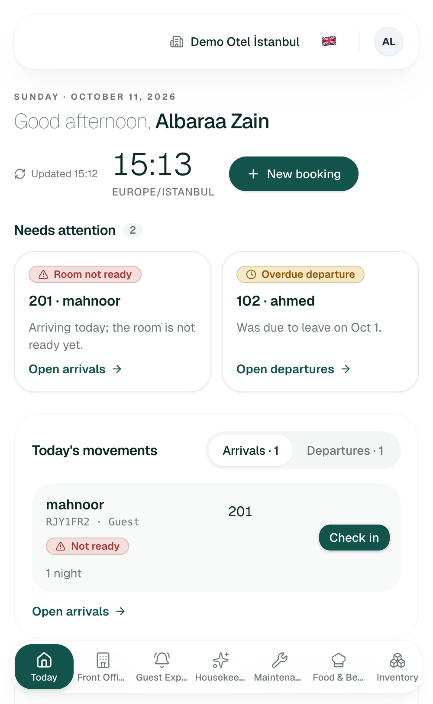